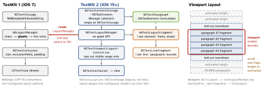

ios-platform · folio
In one line: TextKit is the engine under UITextView and UITextField: a
storage (the attributed text) → a layout manager → a text
container (the shape to fill) → the view. TextKit 2 (iOS 15, default for
UITextView since iOS 16) swaps glyph-based, whole-document layout for
element/fragment objects laid out only around the viewport. Touching the old
.layoutManager silently and permanently drops a text view back to TextKit 1.
Download PDF Print view LaTeX source


How it works
- TK1:
NSLayoutManagermaps chars to glyphs and lays out from the document start to whatever you query. Glyph APIs assume chars ↔ glyphs are contiguous — false for Indic/Arabic scripts; TK2 has none. - TK2: the content manager splits text into immutable elements; the layout manager makes one layout fragment per element (
layoutFragmentFrame,textLineFragments,draw(at:in:)); the viewport controller decides which exist. Cost scales with the screen, not the document. - Pick per view:
UITextView(usingTextLayoutManager: false)(iOS 16) or IB “Text Layout”. TK1 view ⇒textLayoutManagerisnil. - Compatibility mode: reading
textView.layoutManager(ortextContainer.layoutManager) rebuilds the view on TK1 — expensive, loses UI state, no way back. Catch it: breakpoint_UITextViewEnablingCompatibilityMode. - Edits: mutate the backing
NSTextStorageinsideperformEditingTransaction {}so elements and fragments refresh. - Customise, storage untouched:
textContentStorage(_:textParagraphWith:)(display-only attributes, e.g. dim comments) ·textLayoutManager(_:textLayoutFragmentFor:in:)returns your fragment subclass (bubbles, code-block backgrounds).NSTextListin UIKit since iOS 16.
Example — count lines the TK2 way (no glyphs)
let tv = UITextView(usingTextLayoutManager: true)
guard let tlm = tv.textLayoutManager else { return } // nil = TK1
var lines = 0
tlm.enumerateTextLayoutFragments(from: tlm.documentRange.location,
options: [.ensuresLayout]) { frag in // forces layout: costly
lines += frag.textLineFragments.count
return true // false = stop early
}
let cs = tlm.textContentManager as? NSTextContentStorage
cs?.performEditingTransaction { // edit so TK2 sees it
cs?.textStorage?.append(NSAttributedString(string: "\nmore")) }
// DON'T: tv.layoutManager.numberOfGlyphs -> falls back to TK1Which view?
UILabel | display only: no selection, no tappable links, no scroll; cheapest |
UITextField | one line of input; TK2 since iOS 15 |
UITextView | selectable/editable, links, attachments; a scroll view —
isScrollEnabled = false to self-size |
| SwiftUI | Text to display · TextEditor to edit (rich in iOS 26) |
| Core Text | you draw: custom layout, columns, text on paths |
Attachments & wrapping
NSTextAttachment = one U+FFFC character carrying an image; TK2 can host a live view (NSTextAttachmentViewProvider, iOS 15). Wrap around a shape: textContainer.exclusionPaths (container coordinates).
Core Text — when TextKit is too high-level
- C API under TextKit:
CTFramesetter→CTFrame(fills aCGPath) →CTLines →CTRuns (one attribute set each). Size first:CTFramesetterSuggestFrameSizeWithConstraints. - Bottom-left origin: flip the
CGContext(scaleBy(x: 1, y: -1)) and resettextMatrix. No selection, editing, a11y or hit-testing for free.
Big documents — performance
- Height outside the viewport is estimated:
usageBoundsForTextContainerand the scroll indicator shift while scrolling..ensuresLayoutoverdocumentRangelays out everything — keep it off the hot path. - Batch:
beginEditing()/endEditing()(or one transaction) = one layout pass. - Syntax highlighting: restyle only the edited paragraph (
NSTextStorageDelegatedidProcessEditing), not the whole text per key. - Measure without a view:
boundingRect(with:options:context:)+.usesLineFragmentOrigin— thenceil.
Traps
- One stray
.layoutManager— yours or a library’s — silently turns that text view into TK1. Grep for it. - “No glyphs, so no line rect” — enumerate fragments /
textLineFragments. - Mutating
textStorageoutsideperformEditingTransaction→ stale layout. UITextViewvsUILabelmisaligned:textContainerInset(8,0,8,0) +lineFragmentPadding5 — zero both.NSRangecounts UTF-16 units, notCharacters:NSRange(range, in: string).
Remember
“Storage → elements → fragments → viewport. Touch the layout manager and you’re back in 2013.”